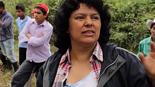
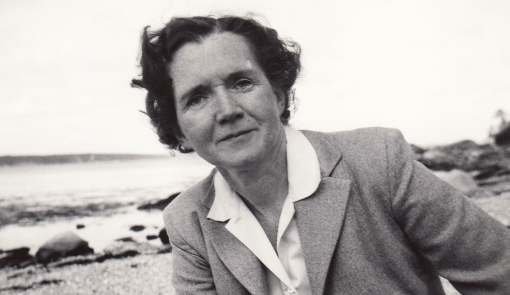
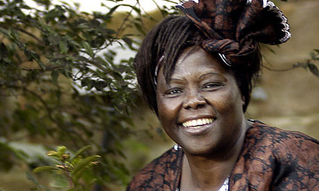

Repasamos la historia de algunas mujeres que con sus actividades de investigación, divulgación o protesta
han contribuido a generar conciencia ambiental y a mejorar el mundo.
Berta Cáceres

La activista medioambiental Berta Cáceres saltó tristemente a la fama cuando fue asesinada en su
domicilio en marzo de 2016. Su “error”: liderar un movimiento en contra de un polémico proyecto
hidroeléctrico en su comunidad. El caso de Berta Cáceres fue muy mediático,
pero es solo la punta del iceberg: cientos de líderes medioambientales son asesinados cada año,
y la mayor parte de las veces estos crímenes quedan impunes.
Rachel Carson

Esta bióloga marina fue la autora del best seller “Silent spring” en el que
alertó de los peligros del uso masivo de un Biocida como el
DDT. Gracias a esta obra se crearía, años más
tarde, la Agencia de Protección Ambiental de Estados Unidos y se prohibiría el uso del polémico
pesticida.
Se considera que, con su labor de divulgación, Rachel Carson sentó las bases del
ecologismo y ayudó a crear una conciencia mundial sobre los efectos de la acción humana
sobre el medio ambiente.
Wangari Maathai

Esta activista keniata fue la promotora del famoso “Movimiento Cinturón Verde”,
un proyecto que tiene a la mujer africana como protagonista y gracias al cual ya se han plantado
millones de árboles en Kenia y evitar la Deforestación.
La incesante labor de esta bióloga al servicio de su comunidad le valió el Premio Nobel
de la Paz en el año 2004, y Wangari Maathai recibió el cariñoso apelativo de
“Mujer Árbol”.
Vandana Shiva
En 1982 creó la Fundación para la Investigación Científica, Tecnológica y Ecológica, la cual
cuenta entre sus iniciativas el Desarrollo
sostenible, impulso y difusión de la agricultura ecológica"programa
Navdanya", el estudio y mantenimiento de la biodiversidad (Universidad de las semillas, Colegio
Internacional para la Vida Sostenible), fomentar el compromiso de las mujeres con el movimiento
ecologista (Mujeres Diversas por la Diversidad), o la regeneración del sentimiento democrático
(Movimiento Democracia Viva).
Greta Thunberg
En agosto de 2018, cuando tenía quince años, Thunberg se tomó un tiempo fuera de la escuela para
manifestarse fuera del parlamento sueco, sosteniendo un cartel que pedía una acción climática
más fuerte contra el Cambio
climático. Pronto, otros estudiantes participaron en protestas similares en sus propias
comunidades. Juntos organizaron un movimiento de huelga climática escolar con el nombre
de Viernes para el Futuro (Friday for future). En 2019, hubo al menos dos protestas
coordinadas en varias ciudades que involucraron a más de un millón de alumnos